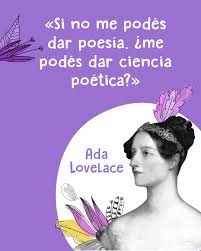

Sobre Yuna
Hola, soy Yunuen Meza nacida en Pachuca, Hidalgo, México. Me titulé como lingüista, aunque mi curiosidad y pasión por la tecnología me llevaron a convertirme también en desarrolladora de software. Creo firmemente que
"Escribir es arte y también una forma de terapia"
Una de mis pasiones más grandes es la literatura. Después de vivir momentos desafiantes durante la pandemia global del Covid, encontré en las letras una herramienta poderosa para mi propia sanación emocional. Así nació mi primer libro, "Una lingüista en busca de la auténtica conexión". En 2024, formé parte de la Antología "Cuenta Cuántos Gatos". También participé en el Taller de Literatura del Centro Cultural y Bienestar Integral Beeykuntik Cbi “Tinta Lunar”, donde, guiada por la escritora, poeta y maestra Martha Miranda Gómez, y en sinergia con mi grupo de estudio, verá luz mi segunda antología publicada.
Soy fundadora, con el apoyo del Fondo de Cultura Económica, del Club de Lectura "Tribu Mujeres y Letras". Más conocida como Yuna, soy una admiradora de los gatos y también mamá de dos gatos Marco y Polo.
"Los gatos se comunican en un lenguaje eternamente felino y honesto, fuera de las apariencias del carácter humano"
Yuna
En 2023, escribí mi primer ebook de estilo motivacional y también publiqué mi relato "Somos historias, viajes y sueños" en el Blog Libropólis, Universo de Letras UNAM. El ebook es gratuito, así que si quieres dar un ojito al relato, puedes consultarlo aquí:
- "Una
lingüista en busca de la de auténtica conexión" [ebook gratuito]
- Somos historias, viajes y sueños[ Blog Libropólis, Universo de Letras UNAM]
Mis pasatiempos favoritos son:
- Senderismo
- Leer
- Programar 
Y algunos de los sitios que me encantan son:
Espero que mi historia te inspire a encontrar tu propia conexión auténtica y a explorar tus pasiones. ¡Gracias por leer!